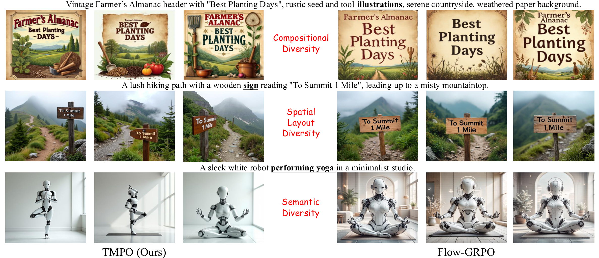
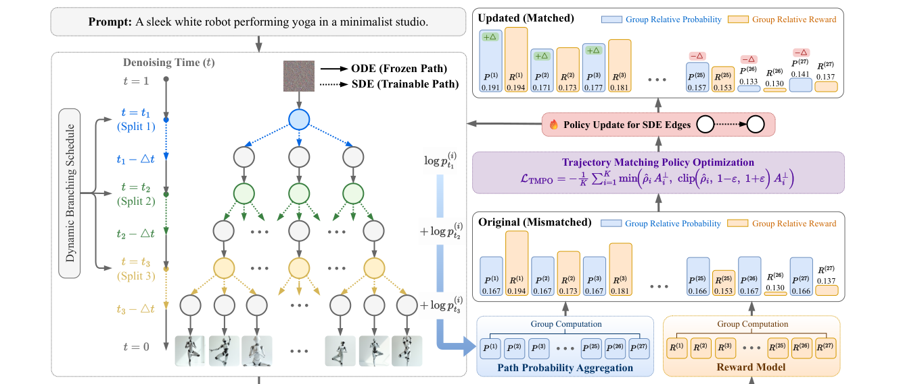
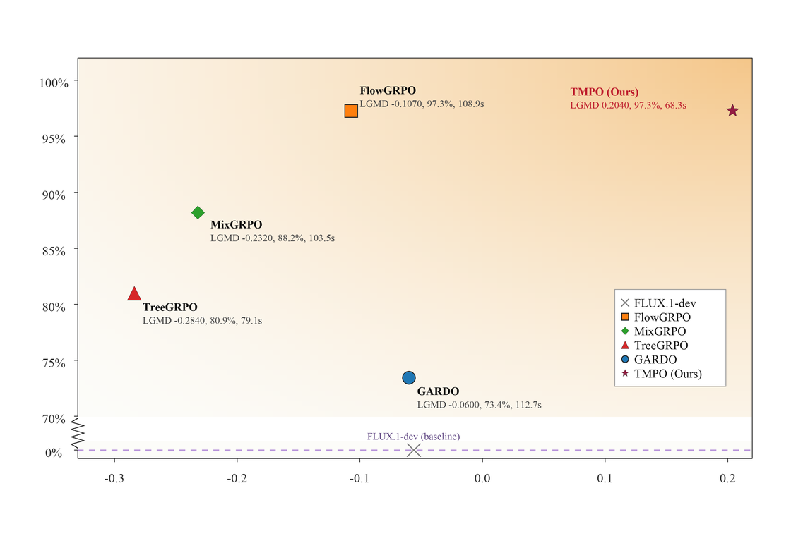
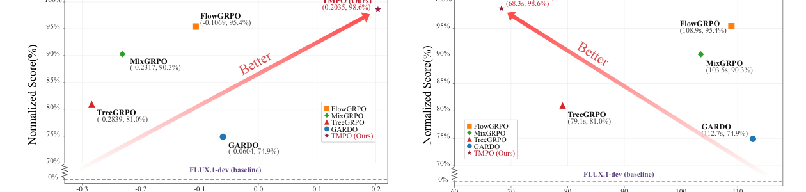
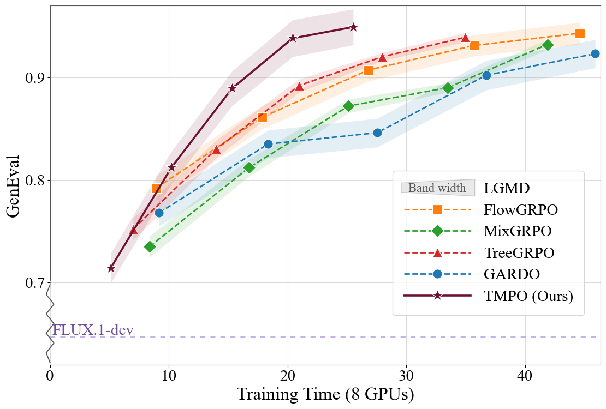
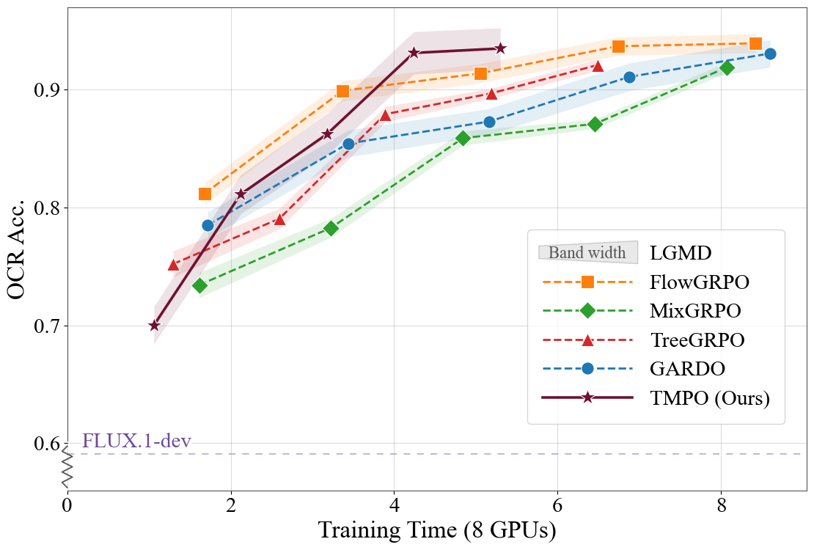
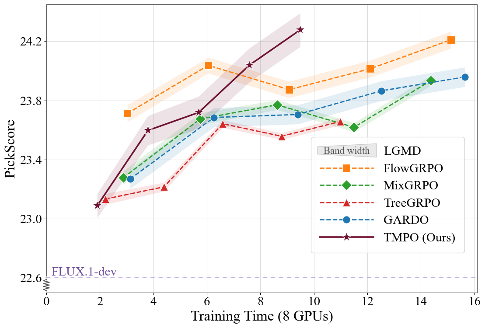
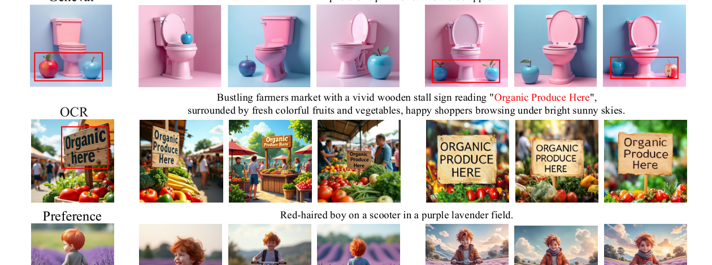

01 / Compositional Diversity
Multiple valid layouts stay alive.


Before the abstract, this image-led stage surfaces direct visual comparisons from the paper assets. Each row pairs TMPO samples with the corresponding baseline outputs to make diversity, spatial layout, and text rendering differences immediately visible.


TMPO replaces scalar reward maximization with trajectory-level reward distribution matching. Instead of concentrating probability on a few high-reward denoising paths, it matches policy probabilities over a group of trajectories to a reward-induced Boltzmann distribution.
The resulting Softmax Trajectory Balance objective inherits the mode-covering behavior of forward KL, preserving coverage over acceptable trajectories while still improving reward. Dynamic Stochastic Tree Sampling shares denoising prefixes and branches at scheduled steps, reducing redundant computation for large flow-matching models.

For each prompt, TMPO samples a shared-prefix trajectory tree, scores terminal images, and optimizes a partition-free distribution matching objective over the observed trajectory group.
Generate K trajectories from the same prompt so reward and policy probabilities can be normalized within the group.
Convert terminal rewards into a softmax target, sharpening preference while retaining multiple valid modes.
Use a log-ratio advantage that penalizes under-covered positive-reward modes instead of chasing only the top sample.
Branch dynamically across denoising steps so large-scale FLUX training avoids redundant full rollouts.

Across FLUX.1-dev alignment settings, TMPO obtains the strongest diversity metrics while staying competitive or best on downstream rewards and reducing per-iteration time.
Best compositional generation score under GenEval-only training.
Best human-preference reward in PickScore-only alignment.
Positive latent-space diversity where reward-maximizing baselines collapse.
Faster than Flow-GRPO, MixGRPO, TreeGRPO, and GARDO in preference alignment.





Qualitative examples show TMPO maintaining prompt fidelity and visibly richer variations in composition, background, viewpoint, and text layout.

Please cite the paper if you build on the trajectory-level reward distribution matching objective, Dynamic Stochastic Tree Sampling, or the diffusion alignment experiments.
@article{li2026tmpo,
title={TMPO: Trajectory Matching Policy Optimization for Diverse and Efficient Diffusion Alignment},
author={Li, Jiaming and Zhu, Chenyu and Yi, Nanxi and Bao, Youjun and Sun, Li and Lv, Quanying and Fang, Xiang and Liu, Daizong and Li, Jianjun and He, Kun and Zhou, Bowen and Ma, Zhiyuan},
journal={Preprint},
year={2026}
}